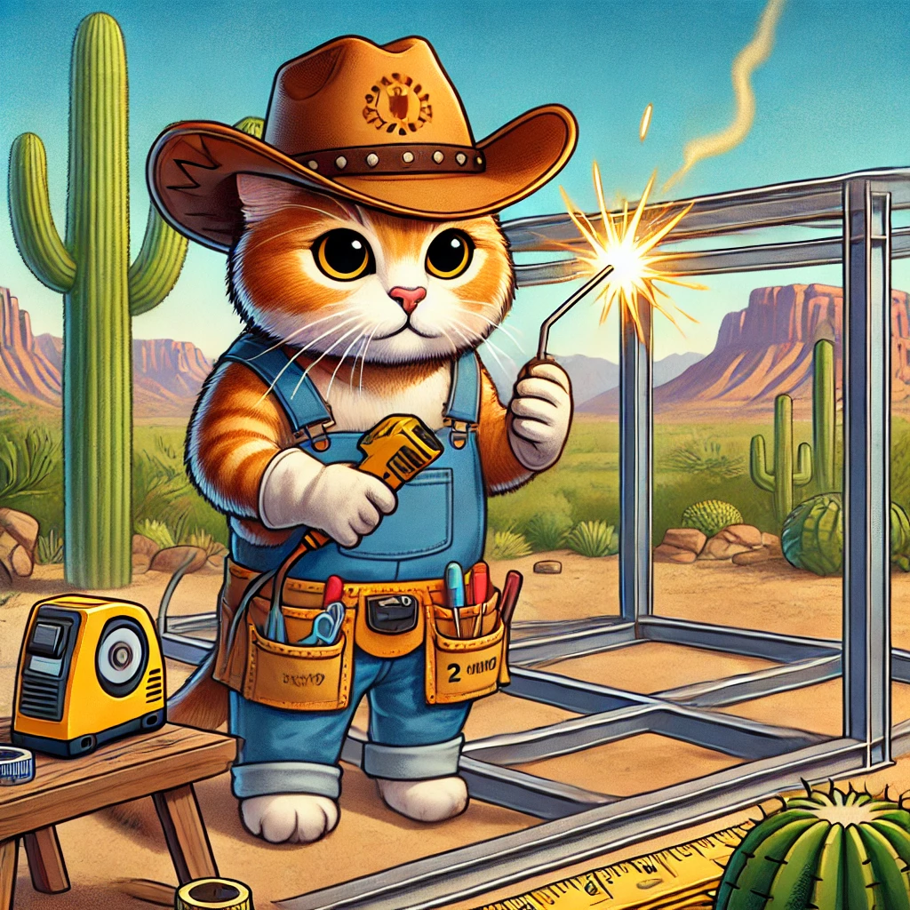

Your trusted partner in creating safe and enriching spaces for your feline friends.
Founded in 2005, Pet Safe Catios has been dedicated to providing custom-designed cat enclosures that prioritize safety, durability, and style. With over 18 years of experience, we’ve helped hundreds of cat owners in Phoenix, Arizona, create the perfect outdoor haven for their pets.
Our journey began with a simple idea: to give cats the freedom to explore the outdoors without the risks of predators, traffic, or other dangers. Today, we’re proud to be the leading provider of custom catios in the region, offering a wide range of designs to suit every home and budget.
At Pet Safe Catios, our mission is simple: to keep your cats safe and happy while giving them the freedom to explore the outdoors. We believe every cat deserves a space where they can climb, lounge, and play without the risks of predators or traffic.
We’re committed to using only the highest-quality materials, including galvanized steel and weather-resistant finishes, to ensure your catio stands the test of time. Whether you’re looking for a small corner catio or a spacious aviary, we’ll work with you to create a design that fits your space and your cat’s needs.
When you choose Pet Safe Catios, you’re choosing:
Ready to get started? Contact us today for a free consultation!
Our team of passionate cat lovers and skilled craftsmen is here to bring your vision to life. Get to know the people behind Pet Safe Catios:
Founder & Business magnate
With a background in Welding and a love for cats, Jack ensures every catio is both functional and beautiful.
Installation Specialist
Raul oversees every installation to ensure your catio is built to the highest standards.
Customer Support
Randy is here to answer your questions and guide you through the process from start to finish.
Whether you’re looking for a custom design or need help choosing the right catio for your space, we’re here to help. Contact us today to schedule your free consultation!
Get Started